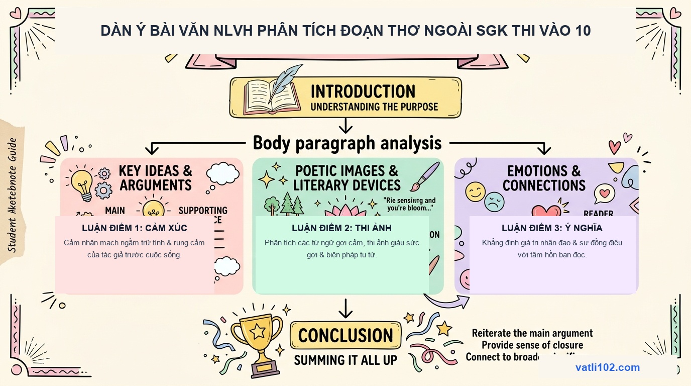

Kỹ Thuật Viết Bài Văn Nghị Luận Văn Học Đoạn Thơ Ngoài SGK Điểm 8.5+ Thi Tuyển Sinh Vào 10
Câu viết bài văn Nghị luận văn học (chiếm từ 4.0 đến 4.5 điểm trong đề thi vào lớp 10) là phần thi quyết định trực tiếp đến cơ hội đỗ vào các trường THPT công lập top đầu. Trước đây, học sinh thường học thuộc lòng các bài văn mẫu về những tác phẩm quen thuộc trong SGK. Tuy nhiên, theo định hướng đề thi đổi mới, các địa phương trên cả nước đều đã chuyển sang sử dụng ngữ liệu thơ ngoài SGK.
Để đạt điểm 8.5+ ở câu hỏi này, các em cần rèn luyện kỹ năng phân tích độc lập theo cấu trúc 3 phần 6 ý chuẩn mực, biết cách kết hợp nhuần nhuyễn giữa việc phân tích từ ngữ nghệ thuật với việc bày tỏ cảm xúc chân thành của bản thân.
1. Khung cấu trúc 3 phần 6 ý của bài văn NLVH hoàn chỉnh
Một bài văn nghị luận văn học chất lượng cần được xây dựng theo khung dàn ý khoa học sau:
- I. MỞ BÀI (1 đoạn - 4 đến 5 dòng): Dẫn dắt ấn tượng từ đề tài → Giới thiệu tác giả, tác phẩm → Trích dẫn nguyên văn đoạn thơ cần phân tích.
- II. THÂN BÀI (3 - 4 đoạn chuyên sâu): - Ý 1 - Khái quát chung: Nêu cảm nhận bao trùm về mạch cảm xúc của đoạn thơ. - Ý 2 - Phân tích Luận điểm 1: Đi sâu vào các từ ngữ, hình ảnh và biện pháp tu từ của khổ thơ đầu. - Ý 3 - Phân tích Luận điểm 2: Phân tích sự chuyển biến cảm xúc và ý nghĩa biểu tượng ở những khổ thơ tiếp theo. - Ý 4 - Đánh giá nghệ thuật & Tư tưởng: Tổng kết nét đặc sắc về thể thơ, giọng điệu và thông điệp nhân sinh.
- III. KẾT BÀI (1 đoạn - 4 đến 5 dòng): Khẳng định lại giá trị trường tồn của tác phẩm → Bày tỏ bài học nhận thức và tình cảm của bản thân.
2. Sơ đồ Sketchnote: Dàn ý bài văn NLVH đoạn thơ ngoài SGK

3. Kỹ thuật chuyển đoạn và liên kết ý mượt mà
Sự khác biệt lớn nhất giữa một bài văn điểm 7 và bài văn điểm 8.5+ nằm ở sự uyển chuyển giữa các đoạn văn. Thay vì dùng những câu chuyển đoạn cơ học như: 'Tiếp theo là khổ thơ thứ hai...', 'Về mặt nghệ thuật thì...', các em hãy sử dụng những cách liên kết giàu chất văn:
- Liên kết theo dòng cảm xúc: 'Khép lại những hoài niệm ngọt ngào của thuở ban đầu, mạch thơ bỗng lắng lại trong những trăn trở đầy âu lo...'
- Liên kết theo chiều sâu thi ảnh: 'Nếu ở khổ thơ trên, hình ảnh người mẹ hiện lên qua nét vẽ lam lũ nhọc nhằn, thì sang đến khổ thơ này, vẻ đẹp ấy lại bừng sáng qua nụ cười bao dung...'
- Liên kết bằng câu hỏi tu từ: 'Điều gì đã làm nên sức lay động mãnh liệt của những vần thơ mộc mạc ấy? Phải chăng chính là tấm lòng thơm thảo của người con...'
4. Bài văn mẫu phân tích đoạn thơ ngoài SGK (Hoàn chỉnh 800 chữ)
'Bàn tay mẹ chắn gió mưa cuộc đời
Nâng niu từng bước con đi
Bao năm chai sạn vết hằn năm tháng
Chỉ mong con lớn nên người.'
Trước hết, tác giả đã mở ra một thi ảnh vừa chân thực vừa giàu sức gợi: 'Bàn tay mẹ chắn gió mưa cuộc đời'. Bằng biện pháp tu từ ẩn dụ 'gió mưa cuộc đời', nhà thơ đã gợi lên bao khó khăn, bão giông và gian truân mà người mẹ phải trải qua để che chở cho con có được một mái ấm bình yên. Động từ 'nâng niu' được đặt ở đầu câu thơ thứ hai như gói trọn tất cả sự dịu dàng, cẩn trọng và nâng niu từng bước đi chập chững thuở ấu thơ của con.
Mạch cảm xúc tiếp tục lắng đọng trong niềm xót xa khi tác giả chạm vào hiện thực nghiệt ngã của thời gian: 'Bao năm chai sạn vết hằn năm tháng'. Hình ảnh hoán dụ 'vết chai sạn' và 'vết hằn' là minh chứng rõ nét cho những tháng ngày lao động vất vả, dãi nắng dầm sương của mẹ. Thế nhưng, đằng sau sự hao mòn thể xác ấy lại là một tâm hồn cao đẹp, vị tha: 'Chỉ mong con lớn nên người'. Cụm từ 'chỉ mong' thể hiện ước nguyện giản dị mà thiêng liêng nhất của mọi người mẹ trên cõi đời — mẹ sẵn sàng hy sinh cả tuổi thanh xuân chỉ để đổi lấy sự trưởng thành và hạnh phúc của con yêu.
Đoạn thơ tuy ngắn gọn nhưng đã đạt tới độ chín của cảm xúc nhờ thể thơ tự do linh hoạt, ngôn từ mộc mạc, giản dị mà thấm đẫm chất trữ tình. Tác giả không dùng những từ ngữ hoa mỹ mà để cho chính những rung động chân thành từ trái tim dẫn đường cho câu chữ.
Tóm lại, đoạn thơ đã tạc nên một tượng đài bất hủ về tình mẫu tử thiêng liêng. Đọc những vần thơ ấy, mỗi chúng ta như được thức tỉnh, thêm trân trọng từng phút giây bên mẹ và tự nhắc nhở mình phải sống sao cho xứng đáng với công ơn trời biển của người sinh thành.”
5. Bảng từ khóa vàng giúp hành văn mượt mà, sâu sắc
| Nhóm chức năng | Các từ ngữ / Cụm từ nên dùng | Tác dụng nâng cao điểm số |
|---|---|---|
| Mở bài & Dẫn dắt | Khơi nguồn cảm hứng, mạch ngầm cảm xúc, thanh âm trong trẻo, chạm tới miền sâu thẳm. | Tạo ấn tượng đầu tiên sang trọng, giàu nhạc cảm. |
| Phân tích thi ảnh | Nét vẽ tinh tế, sức gợi mãnh liệt, biểu tượng đa tầng, bừng sáng vẻ đẹp. | Tránh lối diễn đạt nôm na, thô cứng. |
| Đánh giá tư tưởng | Giá trị nhân đạo sâu sắc, tư tưởng nhân văn cao đẹp, khơi gợi lòng trắc ẩn, dư ba lắng đọng. | Khẳng định tầm vóc của tác phẩm văn học. |
6. Checklist kiểm tra bài văn trước khi hết giờ làm bài
- ✓ Đã trích dẫn thơ ở mở bài chưa? Nếu quên trích thơ ở mở bài sẽ bị trừ 0.5 điểm trực tiếp.
- ✓ Các luận điểm có được tách đoạn rõ ràng không? Bài văn thân bài tối thiểu phải có từ 2 đến 3 đoạn văn.
- ✓ Đã có phần đánh giá nghệ thuật chưa? Dành riêng 1 đoạn ngắn khoảng 5-7 dòng để tổng kết nghệ thuật.
- ✓ Không viết tắt, không gạch xóa bừa bãi: Giữ gìn sự trong sáng của tiếng Việt và tạo thiện cảm với giám khảo.